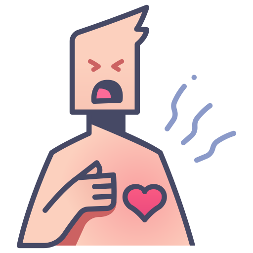

El COVID-19 es una enfermedad nueva y existe información limitada sobre los factores de riesgo de enfermarse gravemente. Con base en la información disponible actualmente y la experiencia clínica, los adultos mayores y las personas de cualquier edad con afecciones subyacentes graves podrían correr mayor riesgo de enfermarse gravemente a causa del COVID-19.
Tos seca Cansancio |
||
Dolor de garganta Diarrea Conjuntivitis Dolor de cabeza Pérdida del sentido del olfato o del gusto Erupciones cutáneas o pérdida del color en los dedos de las manos o de los pies |
||
Dolor o presión en el pecho Incapacidad para hablar o moverse |
 |
Si presentas síntomas graves, busca atención médica inmediata. Sin embargo, siempre debes llamar a tu doctor o centro de atención sanitaria antes de presentarte en el lugar en cuestión.
Lo recomendable es que las personas que sufran síntomas leves y tengan un buen estado de salud general se confinen en casa.
De media, las personas que se contagian empiezan a presentar síntomas en un plazo de 5 a 6 días desde que se infectan, pero pueden tardar hasta 14.